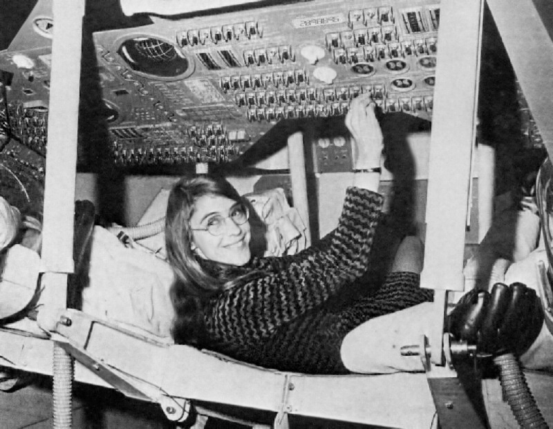

Margaret Hamilton (scientist)
From Wikipedia, the free encyclopedia
For other people named Margaret Hamilton, see Margaret Hamilton (disambiguation).
| Margaret Hamilton | |
|---|---|

Hamilton in 1995
|
|
| Born | August 17, 1936 Paoli, Indiana |
| Education | University of Michigan, Earlham College |
| Occupation | CEO of Hamilton Technologies, Inc. Computer scientist |
| Spouse(s) | James Cox Hamilton |
| Relatives | James Cox Chambers(son-in-law) |
Margaret Heafield Hamilton (born August 17, 1936)[1] is a computer scientist, systems engineer and business owner. She was Director of the Software Engineering Division[2] of the MIT Instrumentation Laboratory, which developed on-board flight software for the Apollo space program.[3] In 1986, she became the founder and CEO of Hamilton Technologies, Inc., in Cambridge, Massachusetts. The company was developed around the Universal Systems Language based on her paradigm of Development Before the Fact (DBTF) for systems and software design.[4]
Hamilton has published over 130 papers, proceedings, and reports about the 60 projects and six major programs in which she has been involved.
Contents
Early Life
Margaret Heafield was born in Paoli, Indiana to Kenneth Heafield and Ruth Esther Heafield (née Partington).[5] After graduating from Hancock High School in 1954, she started out in mathematics at the University of Michigan and earned a B.A. in mathematics with a minor in philosophy from Earlham College in 1958.[6][7] She briefly taught high school mathematics and French upon graduation, in order to support her husband while he worked on his undergraduate degree at Harvard, with the ultimate goal of pursuing a graduate degree at a later time. She moved to Boston, Massachusetts with the intention of doing graduate study in abstract mathematics at Brandeis University. In 1960 she took an interim position at MIT to develop software for predicting weather on the LGP-30 and the PDP-1 computers (at Marvin Minsky's Project MAC) for professor Edward Norton Lorenz in the meteorology department.[8][1][9] Hamilton wrote that at that time, computer science and software engineering were not yet disciplines; instead, programmers learned on the job with hands-on experience.[3]
From 1961 to 1963, she worked on the SAGE Project at Lincoln Lab, where she was one of the programmers who wrote software for the first AN/FSQ-7 computer (the XD-1), to search for "unfriendly" aircraft; she also wrote software for the Air Force Cambridge Research Laboratories.
SAGE Project
The SAGE Project was an extension of Project Whirlwind, started by MIT, to create a computer system that could predict weather systems and track their movements through simulators; SAGE was soon developed for military use in anti-aircraft air defense from potential Soviet attacks during the Cold War. For her part, Hamilton described her duties as such,
What they used to do when you came into this organization as a beginner, was to assign you this program which nobody was able to ever figure out or get to run. When I was the beginner they gave it to me as well. And what had happened was it was tricky programming, and the person who wrote it took delight in the fact that all of his comments were in Greek and Latin. So I was assigned this program and I actually got it to work. It even printed out its answers in Latin and Greek. I was the first one to get it to work.[10]
It was her efforts on this project that made her a candidate for the position at NASA as the lead developer for Apollo flight software.
NASA

Hamilton standing next to the navigation software that she and her MIT team produced for the Apollo project. |
| 
Hamilton standing next to the navigation software that she and her MIT team produced for the Apollo project. |
Hamilton then joined the Charles Stark Draper Laboratory at MIT, which at the time was working on the Apollo space mission. She eventually led a team credited with developing the software for Apollo and Skylab.[11] Hamilton's team was responsible for developing in-flight software,[12] which included algorithms designed by various senior scientists for the Apollo command module, lunar lander, and the subsequent Skylab.[3][13] Another part of her team designed and developed the systems software [14] which included the error detection and recovery software such as restarts and the Display Interface Routines (AKA the Priority Displays) which Hamilton designed and developed.[15] She worked to gain hands-on experience during a time when computer science courses were uncommon and software engineering courses did not exist.[3]
Her areas of expertise include systems design and software development, enterprise and process modelling, development paradigm, formal systems modeling languages, system-oriented objects for systems modelling and development, automated life-cycle environments, methods for maximizing software reliability and reuse, domain analysis, correctness by built-in language properties, open-architecture techniques for robust systems, full life-cycle automation, quality assurance, seamless integration, error detection and recovery techniques, man-machine interface systems, operating systems, end-to-end testing techniques, and life-cycle management techniques.[3][16]
Apollo 11
In one of the critical moments of the Apollo 11 mission, the Apollo Guidance Computer together with the on-board flight software averted an abort of the landing on the Moon. Three minutes before the Lunar lander reached the Moon's surface, several computer alarms were triggered. The computer was overloaded with interrupts caused by incorrectly phased power supplied to the lander's rendezvous radar.[17][18][4] The program alarms indicated "executive overflows", meaning the guidance computer could not complete all of its tasks in real time and had to postpone some of them.[19] The asynchronous executive designed by J. Halcombe Laning [17][20] allowed the computer to cope with the increased demand by prioritizing tasks. Hamilton's priority alarm displays interrupted the astronauts' normal displays to warn them that there was an emergency “giving the astronauts a go/no go decision (to land or not to land)”.[21] Jack Garman, a NASA computer engineer in mission control, recognized the meaning of the errors that were presented to the astronauts by the priority displays and shouted, "Go, go!" And on they went.”[22] Dr. Paul Curto, senior technologist who nominated Hamilton for a NASA Space Act Award, called Hamilton's work "the foundation for ultra-reliable software design."[14]
Hamilton wrote of the incident,
The computer (or rather the software in it) was smart enough to recognize that it was being asked to perform more tasks than it should be performing. It then sent out an alarm, which meant to the astronaut, I'm overloaded with more tasks than I should be doing at this time and I'm going to keep only the more important tasks; i.e., the ones needed for landing ... Actually, the computer was programmed to do more than recognize error conditions. A complete set of recovery programs was incorporated into the software. The software's action, in this case, was to eliminate lower priority tasks and re-establish the more important ones ... If the computer hadn't recognized this problem and taken recovery action, I doubt if Apollo 11 would have been the successful moon landing it was.[23]
— Letter from Margaret H. Hamilton, Director of Apollo Flight Computer Programming MIT Draper Laboratory, Cambridge, Massachusetts[24], titled "Computer Got Loaded", published in Datamation, March 1, 1971
Businesses
From 1976 through 1984, Hamilton was the CEO of a company she co-founded called Higher Order Software (HOS) to further develop ideas about error prevention and fault tolerance emerging from her experience at MIT.[25] They created a product called USE.IT, based on the HOS methodology developed at MIT.[26][27][28] It was successfully used in numerous government projects.[29][30] One notable project was to formalize and implement the first computable IDEF, C-IDEF for the Air Force, based on HOS as its formal foundation[citation needed].
The HOS methodology garnered little interest except among consultants associated with the company.[31] An evaluation conducted by the United States Navy concluded, "the HOS literature tends to advertise their ideas and products more than making a contribution in substance to the field of Computer Science."[31] Edsgar Dijkstra described the USE.IT software as "mechanized aids for the application of obsolete techniques."[32] A detailed analysis of the HOS theory and AXES language was used by Harel to develop a derived language for a more modern form of structured programming derived from HOS called the And/Or programming language from the viewpoint of and/or subgoals.[33] Referring to Dijkstra's classic work on structured programming, Harel states: “As will become clear, the "layers" in which the program is arranged, these being in the heart of the idea of structured programming, correspond to the levels of the tree.” Harel goes on to show at that time how HOS and his derived And/Or programming language relates to mathematical logic, game theory and artificial intelligence. Others have used HOS to formalize the semantics of linguistic quantifiers [34] and to formalize the design of reliable real-time embedded systems[35]
Hamilton left the company, HOS, in 1985. In March 1986, she became the founder and CEO of Hamilton Technologies, Inc. in Cambridge, Massachusetts. The company was developed around the Universal Systems Language (USL) and its associated automated environment, the 001 Tool Suite, based on her paradigm of Development Before The Fact (DBTF) for systems design and software development.[4][36][37][38]
Legacy

Official photo for NASA, 1989. |
When Hamilton started using the term "software engineering",[39][40][41] software engineering was not taken seriously compared to other engineering; nor was it regarded as a science. She began to use the term "software engineering" during the early Apollo missions in order to give software the legitimacy of other fields such as hardware engineering. Over time the term "software engineering" has gained the same respect as any other discipline.[42] "At MIT she assisted in the creation of the core principles in computer programming as she worked with her colleagues in writing code for the world's first portable computer".[43] Hamilton's innovations go beyond the feats of playing an important role in getting man to the moon. Hamilton, along with many other female engineers alike, challenged the male dominated technology field of their time, to allow for women to enter in these STEM fields for many years to come.[44]
Awards
- In 1986, she received the Augusta Ada Lovelace Award by the Association for Women in Computing.[6] This award is given to individuals who have excelled in either (or both) of two areas: 1. Outstanding scientific and technical achievement and 2. Extraordinary service to the computing community through their accomplishments and contributions on behalf of women in computing.[45]
- In 2003, she was given the NASA Exceptional Space Act Award for scientific and technical contributions. The award included $37,200, the largest amount awarded to any individual in NASA's history.[14][46][47]
- In 2009, she received the Outstanding Alumni Award by Earlham College.[6]
In addition, in 2016 a Lego minifigure of her was proposed.[48]
Personal life
She met her husband James Cox Hamilton while at Earlham College. They married in the late 1950s after Heafield earned her bachelor's degree. They had a daughter together named Lauren, who, later in her life, married the billionaire heir, actor, dancer, and choreographer James Cox Chambers. During the weekends she would often take Lauren to the lab to spend time with her daughter and simultaneously "code away creating routines that would later be added to Apollo's command module computer".[43] Margaret Hamilton and James Cox Hamilton eventually divorced.[49]
Publications
- M. Hamilton (1994), "Inside Development Before the Fact," cover story, Special Editorial Supplement, 8ES-24ES. Electronic Design, Apr. 1994.
- M. Hamilton (1994), "001: A Full Life Cycle Systems Engineering and Software Development Environment," cover story, Special Editorial Supplement, 22ES-30ES. Electronic Design, Jun. 1994.
- M. Hamilton, Hackler, W. R.. (2004), Deeply Integrated Guidance Navigation Unit (DI-GNU) Common Software Architecture Principles (revised dec-29-04), DAAAE30-02-D-1020 and DAAB07-98-D-H502/0180, Picatinny Arsenal, NJ, 2003-2004.
- M. Hamilton and W. R. Hackler (2007), "Universal Systems Language for Preventative Systems Engineering," Proc. 5th Ann. Conf. Systems Eng. Res. (CSER), Stevens Institute of Technology, Mar. 2007, paper #36.
- M. Hamilton and W. R. Hackler (2007), "A Formal Universal Systems Semantics for SysML", 17th Annual International Symposium, INCOSE 2007, San Diego, CA, Jun. 2007.
- M. Hamilton and W. R. Hackler (2008), "Universal Systems Language: Lessons Learned from Apollo", IEEE Computer, Dec. 2008.
References
- a b Tiffany K. Wayne (2011). American Women of Science Since 1900. ABC-CLIO. pp. 480–1. ISBN 978-1-59884-158-9.
- NASA Software Engineering Division/Code 580".
- NASA Office of Logic Design "About Margaret Hamilton" (Last Revised: February 03, 2010)
- Hamilton, W.R. Hackler (December 2008). "Universal Systems Language: Lessons Learned from Apollo". IEEE Computer. doi:10.1109/MC.2008.541.
- "Ruth Esther Heafield". Wujek-Calcaterra & Sons. Retrieved December 15, 2014.
- "2009 Outstanding Alumni and Distinguished Service Awards". Earlham College. Retrieved December 15, 2014.
- "Pioneers in Computer Science".
- Lorenz, Edward (March 1962). "The Statistical Prediction of Solutions" (PDF). the Meteorological Society of Japan.
- Steven Levy (1984), Hackers: Heroes of the Computer Revolution, Chapter 5: The Midnight Computer Wiring Society. Doubleday. ISBN 0-385-19195-2
- "AGC - Conference 1: Margaret Hamilton's introduction". authors.library.caltech.edu. Retrieved 2015-12-09.
- "Marect".
- "NASA - NASA Engineers and Scientists-Transforming Dreams Into Reality". nasa.gov.
- Hoag, David (September 1976). "The History of Apollo On-board Guidance, Navigation, and Control" (PDF). Charles Stark Draper Laboratory.
- Michael Braukus NASA News "NASA Honors Apollo Engineer" (Sept. 3, 2003)
- Green, Alan (June 1967). "Keyboard and Display Program and Operation" (PDF). Charles Stark Draper Laboratory. p. 29.
- Weinstock, Maia (2016-08-17). "Scene at MIT: Margaret Hamilton's Apollo code". MIT News. Retrieved 2016-08-17.
- Eyles, Don. "Tales from the Lunar Module Guidance Computer".
- Blair-Smith, Hugh (November 7, 2011). "System integration issues in Apollo 11". IEEE Aerospace and Electronic Systems Magazine. IEEE. 26 (11). doi:10.1109/MAES.2011.6065654.
- Collins, Michael; Aldrin, Edwin E., Jr. (1975). "A Yellow Caution Light". In Cortright, Edgar M. Apollo Expeditions to the Moon. Washington, D.C.: NASA. OCLC 1623434. NASA SP-350. Retrieved June 13, 2013. Chapter 11.4.
- Mindell, David A. (September 30, 2011). Digital Apollo. MIT Press. p. 149.
- Hamilton, Margaret (2009-07-17). "Recalling the 'Giant Leap'". Retrieved 2016-09-08.
- Lickly, Dan (2009-07-17). "Recalling the 'Giant Leap'". Retrieved 2016-09-08.
- Hamilton, Margaret H. (March 1, 1971). "Computer Got Loaded". Datamation (Letter). Cahners Publishing Company. ISSN 0011-6963.
- Rayl, A.J.S. (2008). "NASA Engineers and Scientists-Transforming Dreams Into Reality". 50th Magazine. NASA. Retrieved June 9, 2014.
- "AGC Biography - Margaret Hamilton".
- M. Hamilton, S. Zeldin (1976) "Higher order software—A methodology for defining software" IEEE Transactions on Software Engineering, vol. SE-2, no. 1, Mar. 1976.
- Thompson, Arthur A.; Strickland, A. J., (1996), "Strategic Management: Concepts and Cases", McGraw-Hill Companies, ISBN 0-256-16205-0
- Rowena Barrett (1 June 2004). Management, Labour Process and Software Development: Reality Bites. Routledge. p. 42. ISBN 978-1-134-36117-5.
- M. Hamilton and S. Zeldin. Higher order software techniques applied to a space shuttle prototype program in Lecture Notes in Computer Science, vol. 19, G. Goos and J. Hartmanis, Ed. New York: Springer-Verlag, pp. 17-31, presented at Program Symp. Proc., Colloque sur la Programmation, Paris, France, April 9-11, 1974.
- B. Cohen, W.T. Harwood, M.I. Jackson. The Specification of Complex Systems,.
- Huber, Hartmut (August 1987). "Higher Order Software - Evaluation and Critique" (PDF). Naval Surface Warfare Center.
- Dijkstra, Edsgar (April 7, 1983). "Judging "HOS" From a Distance".
- Harel, David (April 1979). "And/Or Programs: A New Approach to Structured Programming".
- Cushing, Steven. "ABSTRACT CONTROL STRUCTURES. AND THE SEMANTICS OF QUANTIFIERS". Computer Science Department, St. Anselm College.
- Holland, Michael (June 1997). "A Constrained Interface Refinement Method for Embedded System Design". Department of Computing. MPCE, Macquarie University.
- Krut, Jr., B., (1993) “Integrating 001 Tool Support in the Feature-Oriented Domain Analysis Methodology” (CMU/SEI-93-TR-11, ESC-TR-93-188), Pittsburgh, SEI, Carnegie Mellon University.
- Ouyang, M., Golay, M.W. (1995), An Integrated Formal Approach for Developing High Quality Software of Safety-Critical Systems, Massachusetts Institute of Technology, Cambridge, MA, Report No. MIT-ANP-TR-035.
- Software Productivity Consortium, (SPC) (December 1998), Object-Oriented Methods and Tools Survey, Herndon, VA.SPC-98022-MC, Version 02.00.02.
- Rayl, A.J.S. (October 16, 2008). "NASA Engineers and Scientists-Transforming Dreams Into Reality". 50th Magazine. NASA. Retrieved December 27, 2014.
- "Cambridge woman helped put a man on the moon".
- "The NASA Heritage Of Creativity" (PDF).
- Verne (2014-12-25). "Margaret Hamilton, the Engineer Who Took the Apollo to the Moon". Medium. Retrieved 2016-04-29.
- "Her Code Got Humans on the Moon—And Invented Software Itself". WIRED. Retrieved 2016-04-29.
- "Software — and a Woman — at the Heart of Lunar Triumph". WIRED. Retrieved 2016-04-29.
- "Ada Lovelace Awards". Association for Women in Computing.
- NASA Press Release "NASA Honors Apollo Engineer" (September 03, 2003)
- NASA Administrator Sean O'Keefe has commented saying "The concepts she and her team created became the building blocks for modern software engineering. It's an honor to recognize Ms. Hamilton for her extraordinary contributions to NASA."
- Stickgold, Emma (August 31, 2014). "James Cox Hamilton, at 77; lawyer was quiet warrior for First Amendment". Boston Globe. Retrieved December 15, 2014.
- Reporter, Dominique Mosbergen; Post, The Huffington (25 July 2016). "This Proposed Lego Set Honors Women In NASA".